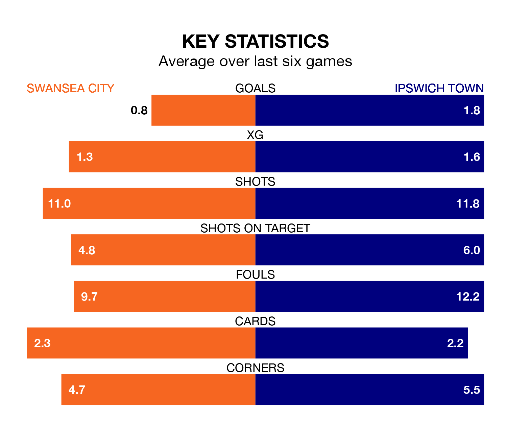

Ipswich Town are strong favourites to take all three points despite Swansea City's home advantage in Saturday's match at the Swansea.com Stadium.
*Betting Company* are offering odds of 1.93 on Ipswich sealing the win, with the visitors sitting fourth in EFL Championship table.
Swansea, who are 16th in the league and 27 points behind the Blues, are priced at 3.6 to win. A draw is set at 3.3.
With 59 goals in 31 games so far this season, Ipswich are the league's joint-third-highest scorers with 1.9 goals per game. And they are conceding fewer than average, letting in 40 goals at a rate of 1.3 per game.
Swansea, meanwhile, are below average scorers, with 1.2 goals per game, compared to a league average of 1.4. They have conceded 1.6 goals per game.
City are in bad form in EFL Championship, with one win and a draw from their last six games.
With two wins and three draws over that period, Town's form is better – they have taken nine points from 18, compared to the Swans' four.
In Václav Hladký, the Blues can rely on one of the league's safest pair of hands. He has kept 10 clean sheets in his 31 appearances this season in EFL Championship.
In the hosts' net, Carl Rushworth has six clean sheets in 32 games. He has conceded a goal every 59 minutes, 30% more often than the 78 minutes between goals for Hladký.
Swansea's last match was on Tuesday, a 4-0 loss against Leeds United.
Ipswich beat Millwall 4-0 last time out, on Wednesday, with Ali Al-Hamadi, Kieffer Moore, Nathan Broadhead and Wes Harding (own goal) on the scoresheet.
Updated: 12:06 (UTC), 15/02/24